Cylinder Block (I)
Cylinder Block Disassembly / Assembly (I)
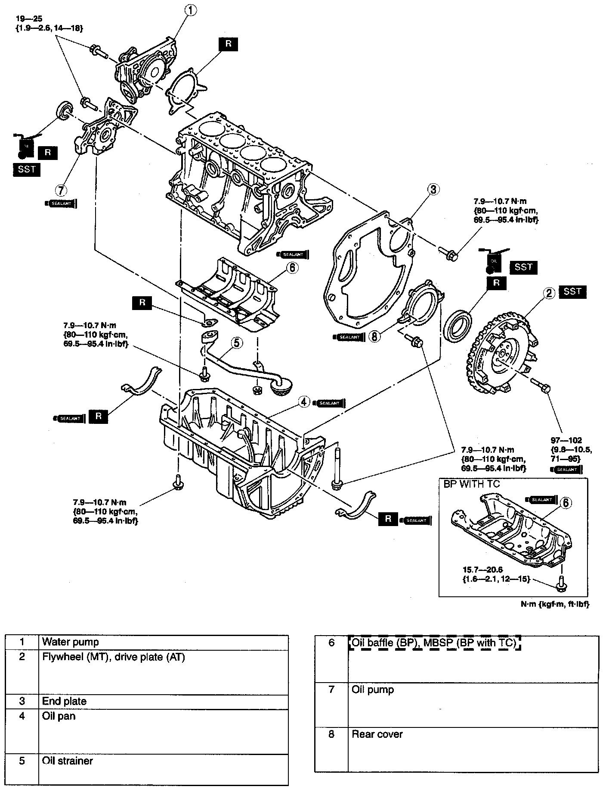
1. Disassemble in the order indicated in the table.
2. Assemble in the reverse order of disassembly.
Flywheel (MT), drive plate (AT) disassembly note
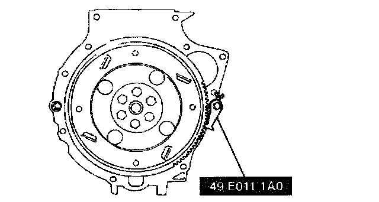
^ Hold the crankshaft by using the SST.
Oil pan disassembly note
1. Remove the oil pan mounting bolts.
Caution: Pry tools can easily scratch the cylinder block and oil pan contact surfaces.
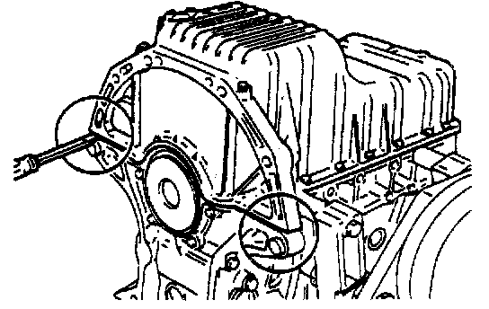
2. Insert a screwdriver only at the points shown.
Oil baffle disassembly note
1. Insert a screwdriver between the cylinder block and the oil baffle to separate them.
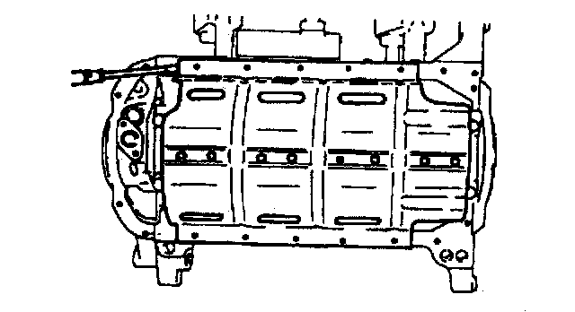
2. Remove the oil baffle.
Oil pump disassembly note
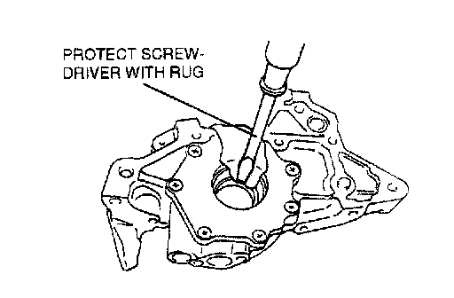
^ Remove the oil seal by using a screwdriver protected with a rag.
Rear cover disassembly note
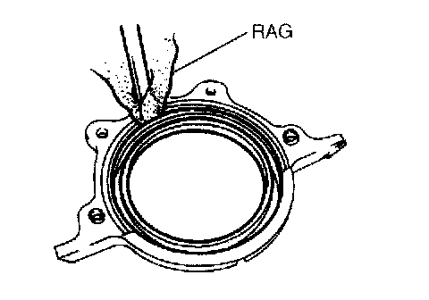
^ Remove the oil seal by using a screwdriver protected with a rag.
Rear cover assembly note
1. Apply clean engine oil to the new oil seal.
2. Push the oil seal slightly in by hand.
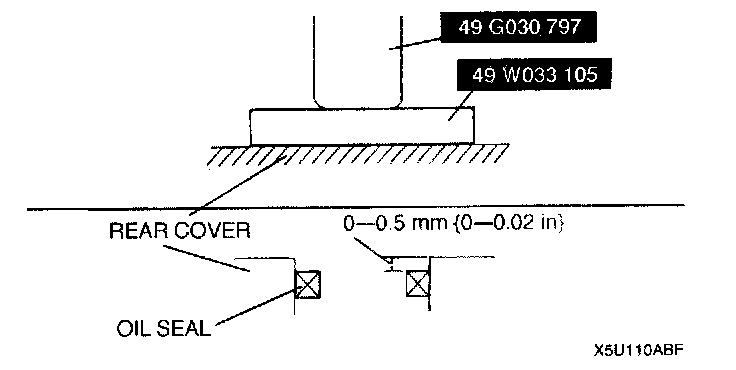
3. Press the oil seal in evenly by using the SST.
4. Apply silicone sealant to the rear cover.
Thickness 2 mm (0.079 inch)
5. Install the rear cover.
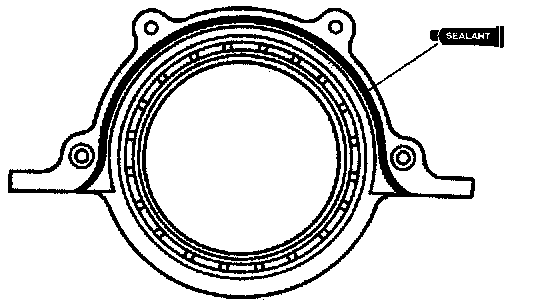
6. Cut away the portion of the silicone sealant that projects from the rear cover toward the oil pan side.
Oil pump assembly note
1. Apply clean engine oil to a new oil seal.
2. Push the oil seal slightly in by hand.
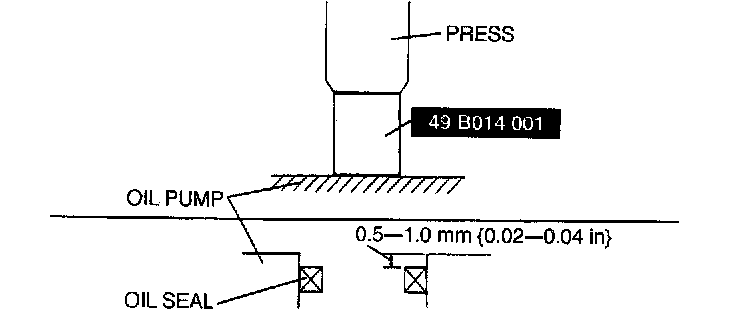
3. Press the oil seal in evenly using the SST.
4. Install the new O-ring.
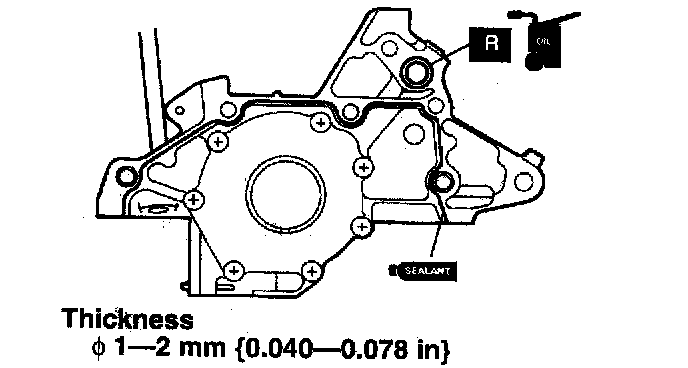
5. Apply silicone sealant to the oil pump.
6. Install the oil pump.
7. Cut away the portion of the silicone sealant that projects from the body toward the oil pan side.
Oil baffle assembly not (BP)
1. Remove all foreign material from the contact surfaces.
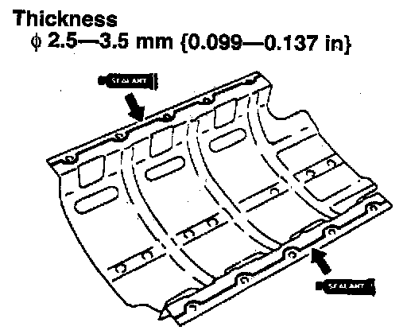
2. Apply silicone sealant to the oil baffle along the inside of the bolt holes, and install within five minutes.
MBSP assembly note (BP with TC)
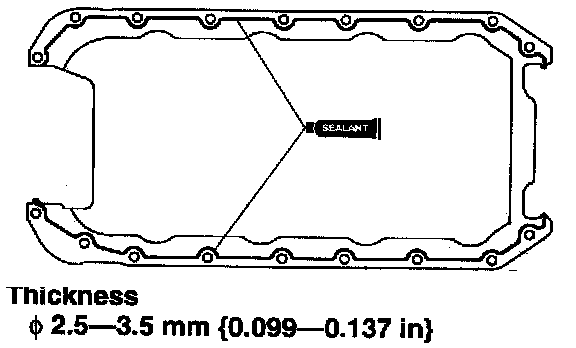
1. Apply silicone sealant to the MBSP along the inside of the bolt holes. and install within five minutes.

2. Tighten the MBSP bolts in two or three steps in the order shown.
Oil Strainer Assembly Note (BP with TC)
1. Install a new oil strainer gasket onto the oil pump body.
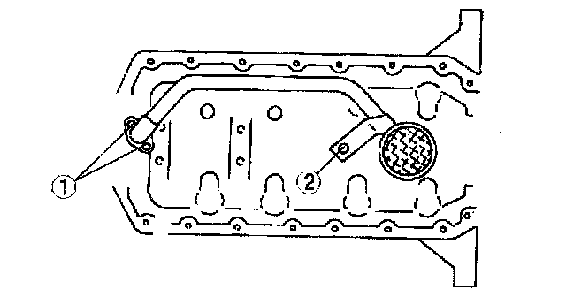
2. Tighten the oil strainer bolts in the order shown.
Oil pan assembly note, (BP)

1. Apply silicone sealant to the oil pan.
Oil pan assembly note (BP with TC)
Caution:
^ If the bolts are reused, remove the old sealant from the bolt threads. Tightening a bolt that has old sealant on it can cause halt
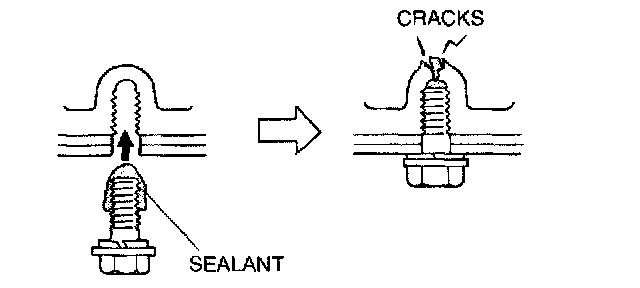
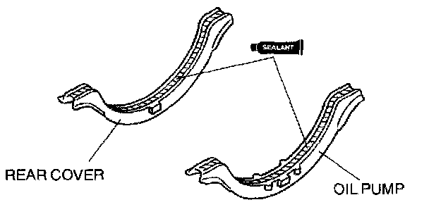
1. Apply silicone sealant to oil pan gasket.
Thickness 2.0 mm (0.079 inch)
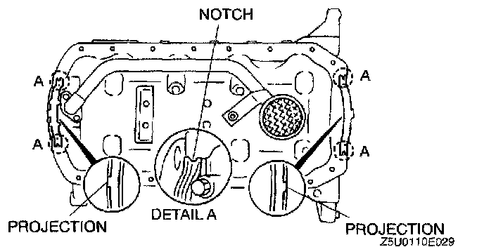
2. Install oil pan gaskets onto the oil pump body and the rear cover with the projections in the notches.
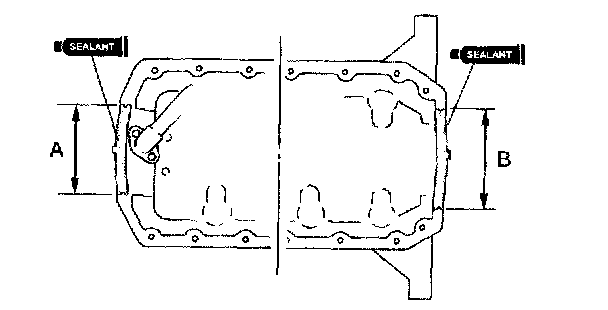
3. Apply silicone sealant onto the area of oil pan gasket indicated by A and B.
Thickness 2.0 mm (0.079 inch)
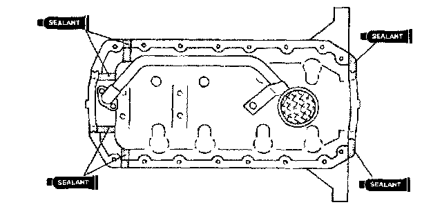
4. Apply silicone sealant to the shaded areas shown.
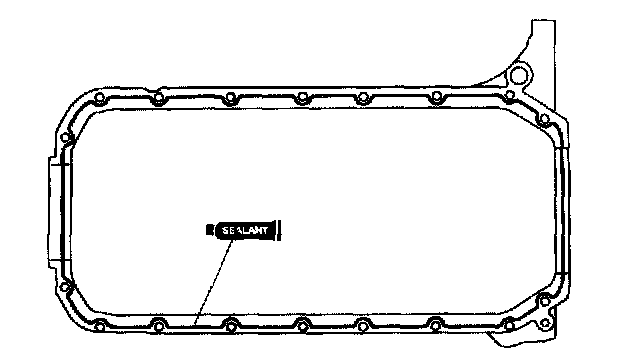
5. Apply silicone sealant to the oil pan along the inside of the bolt holes, and install within five minutes.
Thickness 2.5 - 3.5 mm (0.09 - 0.137 inch)
Flywheel (MT), drive plate (AT) assembly note
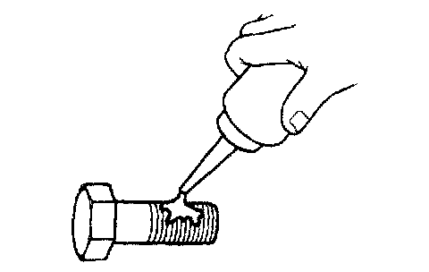
1. Remove the sealant from the bolt holes in the crankshaft and from the bolts.
Caution:
^ If all of the old thread locking sealant cannot be removed from the bolt, it will not torque properly. Replace the bolt.
Note:
^ If a new bolt is used, do not apply thread locking sealant. New bolts have sealant on them.
2. Set the flywheel or Drive plate onto line crankshaft.
3. Apply sealant to the flywheel bolts and install them.
4. Hold the flywheel or drive plate using the SST.
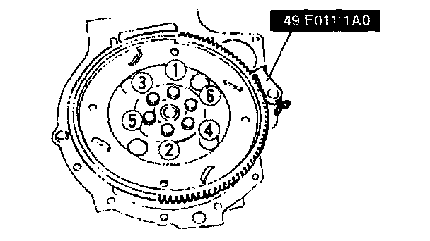
5. Tighten the bolts in two or three steps in the order shown
Water pump assembly note
1. Verify that the rubber seal is securely fixed onto the water pump.
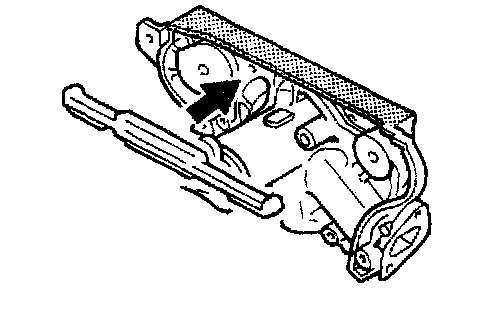
2. If not as specified, remove the rubber seal and reinstall it with the bonding agent.